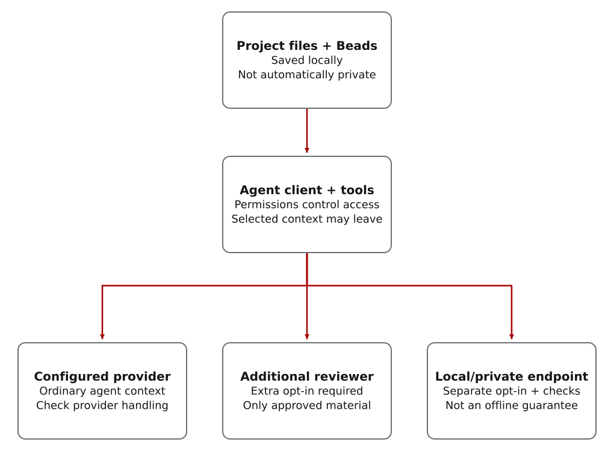

Models, agents and skills
A model produces responses. An agent client, such as Codex, gives it tools and permissions. A skill adds reusable instructions and helpers. CWO is a skill that coordinates project work and records how results were checked and accepted. The client and operating system still control tool access.
This documentation uses Codex CLI for the practice example because that path has been exercised. A browser or terminal interface alone tells you nothing about which tools an agent can use or how its permissions are enforced.
What CWO adds to Codex and Beads
Prompt Coach starts the planning process: it helps define the result, size the work and choose useful review questions. The lead then drafts and revises the plan; synthesis connects second opinions to concrete plan changes.
Codex supplies the tools an agent uses. Beads stores tasks and dependencies. CWO connects them through a project workflow: agree on what finished work must do, assign focused tasks, check findings and results, and save what was accepted and why. Useful records must still be written, verified and backed up.
- Beads alone
- Stores tasks and dependencies; CWO supplies the acceptance-and-review procedure around them.
- AGENTS.md alone
- Tells an agent how to work; CWO also provides supporting validators and execution components.
An instruction tells an agent how to work. CWO also supplies data-format checks, validators and supervised components on supported routes. Neither instructions nor a saved record replace host permissions.
Why add CWO when agent tools already coordinate work?
CWO packages an acceptance-and-review workflow for Codex: set the requirements, give specialists bounded assignments, evaluate their findings, check the result and retain the decision. Its strongest contribution is how these steps fit together, including cloud and local reviewers—not the invention of agents, memory or local inference.
These are complementary tools at different layers. The following comparison describes capabilities in their official documentation, checked on 19 October 2026. It is not a benchmark or a claim that another tool cannot implement CWO's practices.
- Codex and Claude Code: agent clients
- Codex already has separate-context subagents. Claude Code documents restricted subagents and persistent memory, plus experimental teams with shared tasks and dependencies. CWO adds a project-specific procedure for evaluating contributions and recording acceptance; it does not replace their tools or permission systems.
- OpenCode: provider and local-model choice
- OpenCode supports local models and many providers, with configurable permissions. CWO's local-review contribution is the connected request, response checks, evaluation and decision record—not merely configuring a base URL. See the local vLLM workflow.
- LangGraph and CrewAI: application workflow frameworks
- LangGraph provides persistent checkpoints and stores and human interrupts. CrewAI Flows provides event-driven control and persisted state. CWO is a ready-made Codex skill and control package rather than a replacement general-purpose workflow engine.
- OpenAI Agents SDK and AutoGen: multi-agent building blocks
- The Agents SDK supports mixed providers and OpenAI-compatible endpoints, plus guardrails. AutoGen supplies teams, termination conditions and human input. CWO supplies an opinionated project acceptance policy and supporting helpers; developers can build comparable policies on those frameworks.
Choose CWO for the packaged discipline around a project: preserve evaluation criteria, inspect competing evidence, account for failed attempts and continue from accepted decisions. Use fewer coordination steps for smaller tasks; access limits and evidence checks still apply.
What different models add to the review
A model trained or served differently may challenge an assumption another model repeats. CWO lets you retain that challenge, evaluate its source and compare explicit claims with the structured comparison helper. An eligible local review can be primary evidence: it can support the project decision directly, not just suggest a backup idea.
Three distinctions matter:
- Different model names are not independent sources. Two models from the same provider may share assumptions. The default source-counting rules also group local/OpenShift endpoint aliases together.
- Agreement is not verification. Two accepted reviews can agree and still be wrong. Check the implementation or perform the relevant experiment.
- More evidence has a cost. Another review can expose a missed failure or create more disagreement to investigate. The public examples do not establish that adding models consistently improves accuracy or productivity.
The structured comparison code is an explicitly invoked Python helper. Routing can flag it as required; the checked-in dispatch CLI does not automatically call it. Checking each individual review is a separate step. See the automated comparison test and exact limits.
How a task becomes accepted work

Keep a small authorized task in the main thread when that is enough. Delegating adds checks for the worker’s identity, tools, workspace, time and usage allowance, plus monitoring and cleanup. Those checks are described in the delegation guide; adding workers does not by itself improve the result.
Instructions versus executable controls
CWO uses a system prompt optimized for complex project work rather than the default OpenAI system prompt. It instructs the lead to define success, check related behavior, preserve agreed evaluation rules and leave a usable handoff. On supported native routes, code checks assignment records, model identity, workspace ownership, budgets and final results. The host must enforce filesystem, network and tool restrictions; asking an agent to be read-only is not enough.
A successful check applies only to the model, host, source revision and assignment it actually checked. A configuration entry or generated prompt does not prove that an integration works. See delegation requirements and system-prompt setup and limits.
Local, provider, and external sharing boundaries
Project files and Beads may be local while your agent sends selected context to its configured provider. Tool access can expose more than the final answer. Review the client's permissions and provider handling before adding sensitive material.
Additional outside review is off by default. Before using it, agree which provider may receive which material, then prepare and check a brief containing only that material. Running a local model is a separate option; it does not make ordinary cloud sessions offline. Outside review · Local models · Security policy.

Read the diagram as text
- Project files and Beads may be stored locally. The agent client and its tools can read only what their actual permissions allow; tool access may expose more than the final answer.
- The configured provider may receive selected context as part of the ordinary agent session. Check client permissions and provider handling before including sensitive files.
- An additional reviewer is a separate recipient, not a component inside the configured provider. First approve the recipient and material. If the chosen boundary is a redacted brief, send only that checked brief; other disclosure boundaries need their own approval.
- A local or private model endpoint requires separate opt-in and endpoint checks. Using it does not prevent the ordinary cloud agent session from sending context to its provider.
Every model needs guardrails
CWO treats every model as an untrusted contributor, whether it runs in a public cloud or on your own infrastructure. The lead is not exempt: its plans and acceptance decisions also need checks. A confident answer, a familiar provider or agreement between models is not proof that the work is correct or permission to act.
Using a model without guardrails is a choice to trust it implicitly. Guardrails mean limiting what the agent can access and do, checking its work against agreed requirements and keeping consequential actions within your permissions. Instructions alone do not enforce access restrictions; the agent client and host must enforce them.
Scale the coordination to the task, not the trust you place in the model. A small edit may need one lead and focused validation. Saved dependencies, specialist reviews, supervised delegation and handoffs help when work spans decisions, contributors or sessions. Preparing assignments, keeping records and arranging reviews cost time and model quota; using fewer of those steps does not remove the need for access limits and evidence checks.
Guardrails reduce risk; they do not make a model trustworthy or guarantee safety. CWO also cannot provide perfect memory, access to every model or proof that every failure was considered.
Try the practice example, inspect the examples or choose a project task.